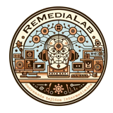
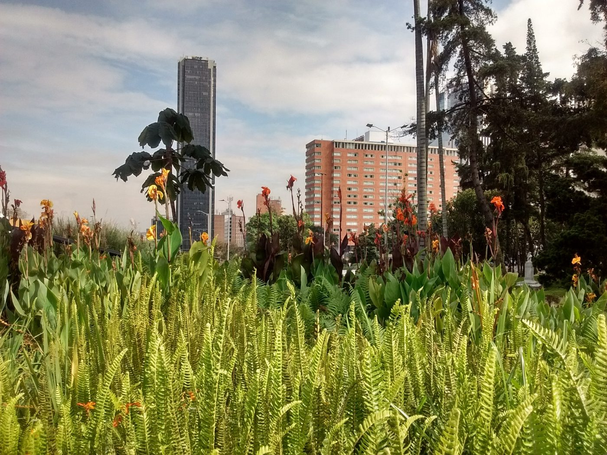
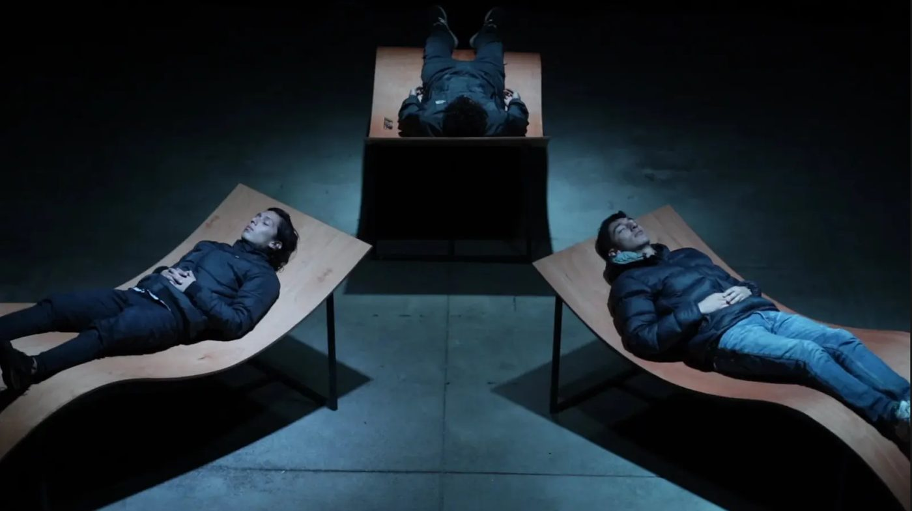
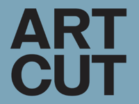
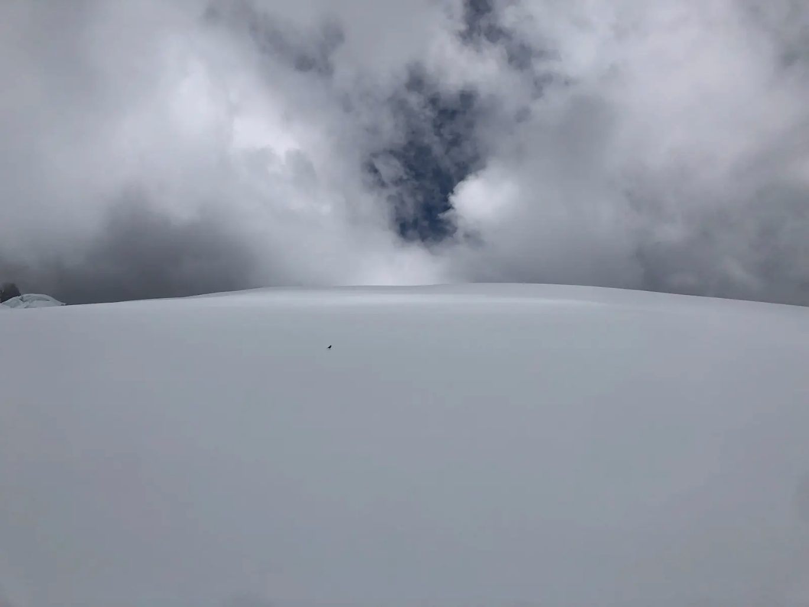
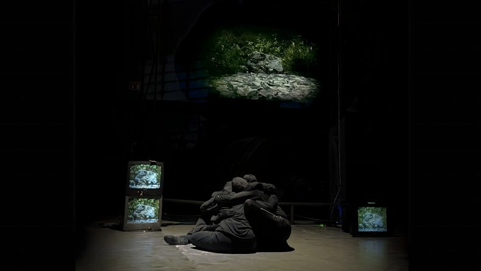
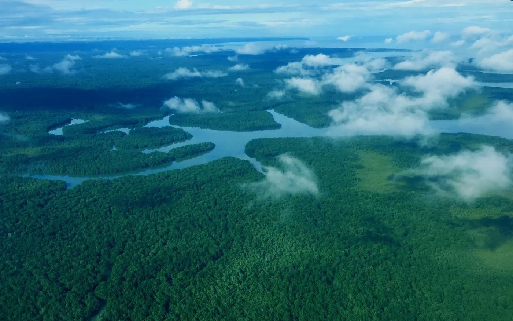
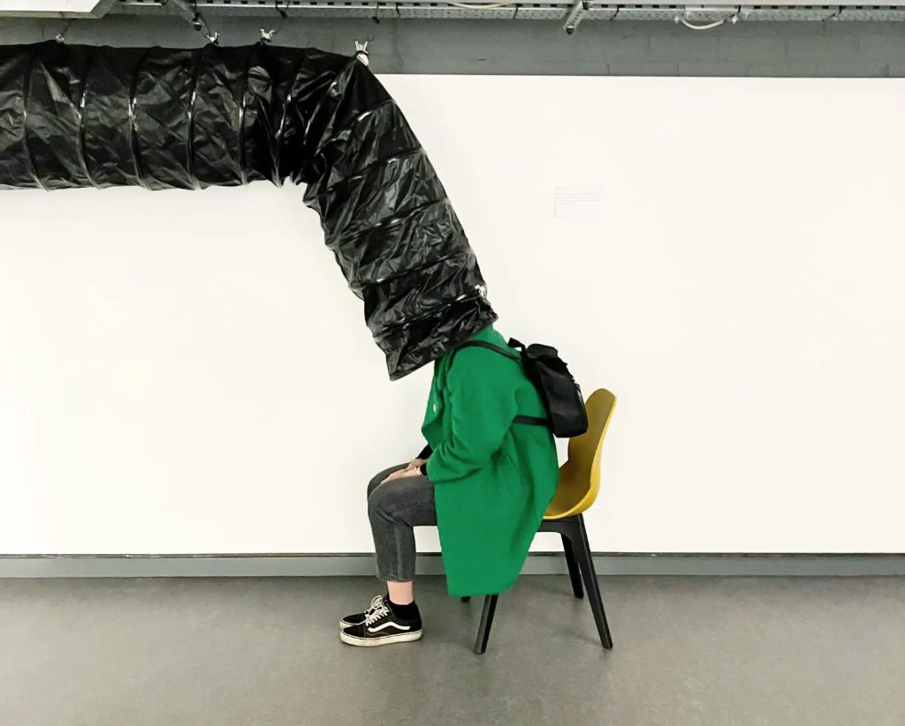

Algunas de las obras de Re:Mediaciones hacen parte de un diálogo con la Trienal de Artes: ART-CUT 2026

Parlamento de lo VivoAUTOR:
Alejandro Duque
Este trabajo se presenta en «La pluralidad de la escucha», que reúne la segunda edición de Re:Mediaciones — Encuentro de Artes Electrónicas y del Cuerpo con el III Congreso Colombiano de Bioacústica y Ecoacústica (septiembre–octubre de 2026), y tiende un puente con la exposición «Ejercicios de empatía: salida interior» de la Trienal de Arte de Universidades Católicas. Los marcos curatoriales y metodológicos son distintos y la confluencia es deliberada: lo que comparten son prácticas que movilizan otras formas de percibir, de relacionarnos y de habitar el mundo.

Refugios sonoros
AUTOR:
Colectivo Viaje Sonoro (2019, Bogotá-Paris)
Sol Camacho-Schlenker, Camila Parra Guevara & Yomayra Puentes-Rivera
Se dice de un Paisaje Sonoro que es la voz o el canto de un lugar. Que emerge, al combinarse los sonidos de todos los cuerpos, orgánicos e inorgánicos, que habitan de diversas formas el espacio, de sus movimientos e interacciones. Se dice también que a medida que una ciudad crece, su voz se va transformando, enronqueciendo con sonidos de motores, endureciendo su eco con líneas paralelas, ángulos rectos y superficies áridas, olvidando los ritmos y las armonías complejas de antaño que le daban su timbre inicial.
Se rumora que, perdidos en la inmensidad de la ciudad inmensa, entre los intersticios del ruido de su ronca voz, se alojan aún pequeños espacios-refugio habitados por cuerpos cuyos movimientos, susurros, roces, risas, goteos, siguen pudiendo ser escuchados, burbujas de memoria en resistencia, semillas de diversidad sonora listas a extender sus coros en cada momento de calma en que el ruido olvida recorrerlas.
Lo que no se dice es que estos espacios-refugio sólo se dejan encontrar cuando recorremos las ciudades con cuidado, con los oídos alertas y los demás sentidos acompañándoles. Y que, a pesar de toda la atención prestada, siempre nos toman por sorpresa. Sólo se sabe que se ha llegado a un refugio sonoro al cruzar su frontera y percibir el cambio de volumen, timbre, ritmo o acento, en la voz del nuevo espacio.
Nos volvimos buscadoras de refugios sonoros. Fuimos aprendiendo a identificarlos con los sentidos atentos y la curiosidad despierta.
Empezamos a mapearlos para poder regresar y compartirlos con otros oídos curiosos.
Volvimos a ellos, describiéndolos y grabándolos para explorar la frontera sensorial entre la voz predominante de la ciudad y las voces escondidas de los refugios sonoros.
Esta obra invita a explorar la frontera sonora de 4 intersticios, en 4 ciudades distintas (Radium, Bogotá, París, Berlín), haciendo énfasis en los cambios percibidos.
¡Feliz escucha!


Ostorium nocturnoAUTORES:
Leonel Vásquez (1981, Colombia) & Carolina Ortiz Cerón (1989, Colombia)
Ostorium Nocturno invita a escuchar las voces que emergen en las noches de los páramos, lagunas y selvas - presencias que acompañan el sueño de muchos seres diurnos como un gran manto arrullador que potencia el descanso, la restauración celular, el equilibrio.
Este lecho de escucha vibrátil recurre al tacto sonoro para que la piel, los huesos y los músculos del cuerpo humano sean acogidos y mecidos por los cantos, murmullos y susurros de los seres que vigilan la noche y el sueño.
Ostorium Nocturno propone un umbral entre la vigilia y el sueño, entre el cuerpo y un entorno sonoro de vida. Es un refugio para desacelerar, entregarse de otra manera a la escucha de otros, y recordar que mientras algunos seres dormimos en la noche, hay otros que respiran, cantan, se transforman, y nos acompañan.

Ambigüar para entrever
AUTOR:
Nicolás Leyva Townsend (1982, Colombia)
Ambigüar para entrever busca problematizar la existencia de los nevados, por medio de situaciones artísticas con la participación de personas que habitan, trabajan o frecuentan las alturas. El material que aquí se expone tiene la intención rastrear aquellos momentos del proceso investigativo en los que emerge un vínculo empático que reconoce la diversidad de mundos posibles. Lo que se busca con este método generativo es ambigüar lo presupuesto como real y, desde ahí, obtener insumos para cuestionar las narrativas ambientales que han sido normalizadas. En este proyecto el disenso es la pieza clave con la cual entrever otras formas de existencia y ampliar la imaginación política.

Escuchas y escrituras
AUTORA:
Angélica Piedrahita (1981, Colombia)
Escuchas y Escrituras explora las posibilidades de los medios expandidos para abordar la crisis ecológica a través de un dispositivo escénico que articula performance, instalación audiovisual y composición electroacústica espacializada. En un diálogo ficcional entre entidades geológicas y un par de mirlos, la obra imagina una comunicación más allá de los límites del lenguaje humano. Rocas y aves se encuentran así en un espacio de escucha interespecie que hace visibles las redes de interdependencia material y simbólica que vinculan a los seres y los entornos, mientras señala las huellas de la contaminación plástica.
Escuchas y Escrituras explora las posibilidades expresivas de los medios expandidos para abordar críticamente la crisis ecológica. A través de un dispositivo escénico multimedial que integra performance, instalación audiovisual y composición electroacústica espacializada, la obra propone un diálogo ficcional interespecies entre entidades geológicas y un par de mirlos, como estrategia poética para señalar la contaminación plástica. La obra explora el colapso de escalas temporales heterogéneas, desde el tiempo geológico hasta la cronobiología. Rocas y aves en un diálogo ficcional interespecie evidencian las redes de interdependencia material y simbólica de la ecología. La disposición espacial estratégica configura un campo inmersivo que entiende las artes visuales como campo epistémico- sensible para reflexionar sobre la crisis climática y la transformación de nuestras ecologías relacionales. El proyecto se inscribe en la intersección del cine expandido y el arte sonoro conformando una estructura intermedial que pone en escena tiempos geológicos y biológicos, performandos por humanos y monitores CRT reciclados que proyectan renders de delimitaciones de rocas intervenidas con erupciones plásticas. El sonido proveniente de diversas fuentes sonoras en tiempo real y pregabadas que generan un entorno electroacústico multicanal buscando resonancias que permitan desbordan los registros y las voces, aludiendo a los paradigmas de las experiencias aurales del paisaje y las formas en que se plantea una experiencia sonora ficcional de la geología.

Murmullos I
AUTOR:
Alejandro Castillejo (1967, Colombia)
Murmullos I es una pieza sonora construida a partir de los sonidos, las voces y las conversaciones recogidas durante años de viajes y encuentros con ancianos y sabios de distintas comunidades indígenas de Colombia. En una composición de ocho canales, las escenas de la vida cotidiana en la Amazonía se entrelazan con conversaciones sobre la coca, la Ley de Origen y el sufrimiento de la Madre Tierra, dando forma a un paisaje sonoro plural y estratificado.
Más que conducir hacia una comprensión única, la obra propone una escucha atenta a aquello que se encuentra en el límite de lo conocido y lo que aún no puede ser plenamente comprendido. Este archipiélago de capas sonoras se asemeja a lo que Richard Elliot afirmó sobre la literatura del sinsentido: «El momento del sinsentido es una experiencia fronteriza, situada entre otros ámbitos de construcción de significado; la naturaleza misma de “entender” o no “entender” forma parte del proceso del sinsentido»
Murmullos I es una pieza sonora de dieciséis minutos basada en una serie de conceptos y métodos particulares desarrollados a lo largo de la última década. Es el resultado de extensos viajes por todo el país durante dos años y numerosas conversaciones con ancianos y sabios de toda Colombia. Compuesto por ocho canales de sonido, recoge algunos de los sonidos de las sociedades amazónicas que habitan la región de Araracuara en relación con su vida cotidiana, así como varias conversaciones colectivas sobre la coca y la Ley de Origen, celebradas al atardecer con ancianos de los pueblos Andoque, Muina-Murui (antes llamados Huitoto) y Nonuya, entre otros. Incluso exploré el tema del «sufrimiento de la Madre Tierra» con pueblos cuyas lenguas están en peligro de extinción, como los Makaguaje de Caquetá, también en la región amazónica.

Eccesso di Ablazione
AUTOR:
Sergio Maggioni (1981, Italia) - (neunau)
Eccesso di Ablazione es una sesión de escucha de doce minutos en completa oscuridad. El público se recuesta en círculo, con los pies hacia el centro, donde un subwoofer rodeado por seis altavoces reproduce el ciclo de un día completo grabado dentro del glaciar Adamello, el más grande de los Alpes italianos.
La composición proviene de un archivo de 15.000 horas de grabaciones recolectadas mediante adquisición pasiva durante los veranos de 2021, 2022 y 2023; los mismos datos sustentan dos publicaciones revisadas por pares (Geografia Fisica e Dinamica Quaternaria, 2024; EGU General Assembly, 2024). Una voz en off marca hora, altitud, temperatura y presión sonora. El fundamento acústico de la obra es el rumor del torrente subglacial: por debajo de los sesenta hercios no pasa solo por el oído, entra en el cuerpo y llega desde el suelo. Quien lo desee puede sostener un globo sobre el pecho, a través del cual la vibración se percibe por el tacto, haciendo la obra perceptible también para un público sordo. El título es un término glaciológico: la ablación es el proceso por el cual un glaciar pierde masa, por fusión y sublimación, y hay exceso de ablación cuando esa pérdida supera la acumulación.

Río Adentro
AUTOR:
David Vélez (1973, Colombia)
Esta instalación busca generar conciencia sobre la importancia ecológica de los cuerpos hídricos a partir de una serie de grabaciones sonoras subacuáticas y subterráneas realizadas en el río Calder, en el norte del Reino Unido, considerado uno de los más contaminados del país. Actualmente, este río sufre filtraciones de aguas residuales, especialmente en áreas urbanas, como resultado de las prácticas negligentes de algunas empresas privadas de gestión del agua.El título, Río Fantasma, hace referencia a una serie de sonidos guturales producidos por peces que logré grabar exclusivamente en zonas rurales y naturales del río. La naturaleza de estos sonidos, presumiblemente emitidos por rutilos y bagres —especies directamente afectadas por la contaminación— les confiere una cualidad misteriosa e incierta, que vincula el presente con el exuberante pasado de este río que, hace 310 millones de años durante el período Carbonífero, albergó una biodiversidad comparable a la de la selva amazónica. Finalmente, un colapso climático que redujo la temperatura en aproximadamente 6 °C provocó la desaparición de numerosas especies, incluidos anfibios gigantes como Microsauria, Eryops, Diplocaulus, Labyrinthodontia y Nectridea, que dominaban este ecosistema, de manera comparable a como los dinosaurios y los humanos lo han hecho en otros períodos.
Esta instalación busca generar empatía con los ríos y sus habitantes a través de la vibración sonora del río Calder, invitando a los escuchas a establecer un vínculo empático con este y con los ríos que sufren de contaminación en todo el mundo, mediante una pieza que invita a una escucha inmersiva, reflexiva e íntima.